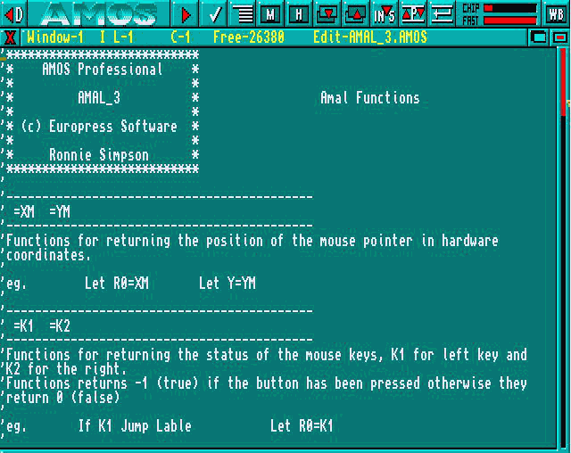
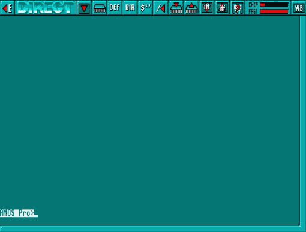

The
[<D] button at the top-left of the screen is used to go into
Direct Mode. This is also achieved by pressing the [Esc] key. Direct
Mode is fully explored later.
The
[<D] button at the top-left of the screen is used to go into
Direct Mode. This is also achieved by pressing the [Esc] key. Direct
Mode is fully explored later.04.01 The Editor
04.02 Help
Welcome to the AMOS Professional Editor! It is assumed that you have either read the last Chapter, or are already familiar with AMOS or Easy AMOS.
AMOS Professional provides one of the most effective and powerful creative environments for the Amiga programmer. It is also incredibly simple to use. Here is a synopsis of the AMOS Professional enhancements and improvements over the previous incarnations of the Editor.
The size of the Editor working area has been dramatically increased.
The increased working area is made possible by the provision of a comprehensive system of pull-down menus. The main menu headings are invisible until they are revealed by pressing the right mouse button. The second part of this Chapter provides a detailed guided tour of the vast selection of menu options.
The on-line Help system that was offered by Easy AMOS has been enhanced beyond recognition! Instant Help is available for any command, offering definitions, correct syntax and working examples. This allows instant insights into the hundreds of new commands provided by AMOS Professional for existing AMOS and Easy AMOS users. Chapter 4.2 contains a full analysis of the Help system.
A Monitor accessory can be called for analysis and reports of actual program listings, and this is explained in Chapter 12.1.
AMOS Professional features a split-screen Editor, allowing you to flick from program to program with a single mouse click.
There is immediate access to printer support, and listings can be printed by selecting a single menu option.
The block system has been dramatically improved, and given its own mode. Block Mode can be entered by double clicking on the left mouse button, or by summoning the [Block] menu.
The SET BUFFER command is now intelligent, allowing you to increase the memory area at any time, without the necessity to save programs first. Finally, the File Selector is new, improved and extremely friendly!
The AMOS Professional Editor is very easy to use, and it may be tempting to pick up the system as you go along, particularly if you have experience of AMOS or Easy AMOS. After a few weeks of use, the exploitation of the Editor features will become almost instinctive.
However, if you plunge into the system without a little guidance, you may well end up using only a fraction of the Editor's potential capability. The sheer power of the system is vast, and it would be a pity to overlook some of its exciting features. It is possible that you may only need to refer to this Chapter once, but please make sure that you are aware of everything that the AMOS Professional Editor has to offer.
The purpose of the Editor is to make it as easy as possible to create, adapt and modify AMOS Professional programs via your screen. To achieve this, the Editor provides a range of tools that have been designed with the sole purpose of saving Amiga programmers time, trouble, frustration and confusion. It also short-circuits the need for ugly, complex program listings! The Editor is intelligent, and will recognise AMOS Professional instructions as they are typed in, allowing mistakes to be corrected immediately.
You can even tidy up your program listings with an automatic indenting option, and make them pleasing to the eye and more accessible to the brain.
You are able to move through your streamlined listings at high speed, jumping from one label or procedure to the next. The procedures themselves are complete program modules that can be compacted into a single line of your listing by “closing” them.
Wherever possible, the AMOS Professional Editor will call up Help at the touch of a button, whenever you need it.
Here is a diagram of the AMOS Professional Edit Screen. There follows a short guided tour of its features.

The
[<D] button at the top-left of the screen is used to go into
Direct Mode. This is also achieved by pressing the [Esc] key. Direct
Mode is fully explored later.
 The
[WB] button at the top-right of the screen is used to go to the
Workbench. If AMOS Professional has been loaded from the Workbench,
it will remain in memory, and you can return to AMOS Professional by
pressing [Left Amiga]+[A].
The
[WB] button at the top-right of the screen is used to go to the
Workbench. If AMOS Professional has been loaded from the Workbench,
it will remain in memory, and you can return to AMOS Professional by
pressing [Left Amiga]+[A].
The [WB] button will have no effect if the CLOSE WORKBENCH command has been called from one of your programs, as explained in Chapter 13.1.
Between the [DIR] and [WB] buttons, there is a line of icons that provide rapid access to various features, directly from the screen. From left to right, they have the following uses:
 As
usual, all of these icons are activated by the left mouse
button. This is the [RUN] button, and it is used to run the current
program listing. If any errors are encountered in the program, a
message will be displayed in the Information Line.
As
usual, all of these icons are activated by the left mouse
button. This is the [RUN] button, and it is used to run the current
program listing. If any errors are encountered in the program, a
message will be displayed in the Information Line.
The [TEST] button instructs AMOS Professional to test the current program for errors, without running the program. A full list of error messages is listed in Chapter 12.3, and the Help facility is available to explain the correct use and syntax of instructions.
[INDENT]. Use this button to automatically indent your program listings. Where example programs are printed in this User Guide, they are displayed in indented format.
 This
icon is used to summon up the AMOS Professional [MONITOR], which
provides detailed help and analysis of your programs. A full
explanation of the Monitor can be found in Chapter 12.1.
This
icon is used to summon up the AMOS Professional [MONITOR], which
provides detailed help and analysis of your programs. A full
explanation of the Monitor can be found in Chapter 12.1.
 [HELP].
The next Chapter provides a detailed examination of the AMOS
Professional help facilities. Use this button to call up the Help
main menu.
[HELP].
The next Chapter provides a detailed examination of the AMOS
Professional help facilities. Use this button to call up the Help
main menu.
 [UNDER] and [ABOVE]. This pair of buttons is used to display the
window which is under or above the current window, in other words it moves to
the previous or next window.
[UNDER] and [ABOVE]. This pair of buttons is used to display the
window which is under or above the current window, in other words it moves to
the previous or next window.
 The [INSERT/OVERWRITE] button toggles between the two modes of
editing, which are explained in the paragraphs concerning the Information Line,
below.
The [INSERT/OVERWRITE] button toggles between the two modes of
editing, which are explained in the paragraphs concerning the Information Line,
below.
 The [PROCEDURES] icon is used to open or close a procedure. Unlike
the image of the last button, which is a toggle, this icon is an animation, and after
being activated it returns to its original state.
The [PROCEDURES] icon is used to open or close a procedure. Unlike
the image of the last button, which is a toggle, this icon is an animation, and after
being activated it returns to its original state.
This icon represents [INSERT A RETURN], and its use is dealt with in the explanations of the menu options.
The two indicator bars to the right of the above icon buttons display the amount of Chip and Fast memory that is currently being used.
The windows that hold program listings appear immediately below the row of Edit icons.
At the top of each window is an Information Line, that displays the title of the current “project” and provides a status report. It also displays three Edit Window Icons, as follows:
At the left-hand side of the Information Line, there is a small [CLOSE] icon. This closes the current window and erases its contents. Since this is a drastic action, you will be asked to confirm your intentions before the window is closed. Select [Cancel] to abort the closing operation, and leave the current program intact. Please note that when the last window is closed in this way, the program will be erased and the window will be left clean, ready for your next editing action.
You may wish to open a new window now, before experimenting any further. Please hold down the right mouse button and with the button held down, drag the mouse pointer to the [Project] menu heading and highlight the [Open New] option. Now release the right mouse button, and a new window will be opened at once. You can open more windows if you wish, to prove how simple this is, and then close them again with the [CLOSE] button.
You are allowed as many active windows as you wish, providing that there is enough screen space. Once a window has been opened, it may be re-positioned by dragging its Information Line using the left mouse button, and its size can be changed by dragging its lower border in the same way.
Only one window can be active at a time, and this is used for all current editing operations, and menu selections. If there is more than one window open, an individual window is selected by simply clicking on its contents with the mouse. A flashing cursor will be positioned over the relevant programming line. The Information Lines of any inactive windows are reduced to a dull display, leaving the current active window's display in its original bright condition.
There are two other icons at the right-hand end of the Information Line.
The [HIDE] icon is used to hide a normal program from the display. Hidden “accessory” programs are available directly from the [AMOS] main menu. Accessories are discussed at the beginning of Chapter 13.1.
This icon is the [COMPRESSOR] button, and it is used to compress a window to a single title line, revealing and windows underneath. To expand a window to its original state, simply click on this icon again.
Between the window icons, the Information Line offers the following status reports, from left to right.
The number of the window is displayed first, starting from 1.
The current Editing mode is displayed next. And it means that new characters that are typed in will be inserted wherever the edit cursor is on the screen. This is the default status. 0 indicates that new characters will overwrite characters that are already displayed in the Edit Window.
L and C indicate which line and which column are currently being edited, in other words, the current location of the program cursor.
Free indicates the amount of memory available to hold your listing. The normal setting of approximately 32k can be increased at any time, via a simple menu option.
Edit lists the filename of the current program. If it is not yet saved onto disc, it will be assigned the name “New project”.
To the right of the window area, there is a thin vertical bar. This can be dragged with the mouse to move your window over the current program listing. The window may also be scrolled vertically or horizontally by clicking anywhere along the edges of the display. Moving through a long program listing is explained later, in the menu options and their equivalent keyboard short-cuts.
If you click on the left mouse button and then hold down the right mouse button, the slider will move rapidly through the listing, page by page. All AMOS Professional sliders operate on a similar principle.
If you read through the last Chapter, you will be familiar with the purpose of the AMOS Professional Direct Mode, otherwise it is assumed that you already have experience of the AMOS or Easy AMOS Direct Mode operations.
Please enter Direct Mode, now either by clicking on the [DIR] button in the Edit Window, or by pressing the [Esc] key.
The Direct Mode working screen will appear, looking like this:

The Direct Mode screen has a bar of useful icons above a large window area where commands are entered and their results displayed.
The [<E] button at the top-left of the screen is used to return to Edit Mode. This is also achieved by pressing the [Esc] key.
The [WB] button at the top-right of the screen is used to go to
the Workbench. If AMOS Professional has been loaded from the Workbench, it will remain in
memory, and you can return to AMOS Professional by pressing [Amiga]+[A]. The [WB]
button will have no effect if the CLOSE WORKBENCH command has been called from one of your
programs, as explained in Chapter 13.1.
 To the right of the “DIRECT” identification panel is the
[OUTPUT] icon. This is used to toggle the display of all operations between the Direct Mode
window and your program screen. If selected, operations will be performed in the Direct
Mode window, and the program display will remain untouched. To return to normal, simply
select the [OUTPUT] button again. Please note that only text output is permitted within this
window.
To the right of the “DIRECT” identification panel is the
[OUTPUT] icon. This is used to toggle the display of all operations between the Direct Mode
window and your program screen. If selected, operations will be performed in the Direct
Mode window, and the program display will remain untouched. To return to normal, simply
select the [OUTPUT] button again. Please note that only text output is permitted within this
window.
The row of ten icons between the [OUTPUT] and [WB] icons are the equivalent of pressing one of the Direct Mode function key pre-sets [F1] to [F10]. Selecting one of these icons with the left mouse button is the same as pressing the equivalent function key. Selecting a button with the right mouse button is the equivalent of pressing [Shift]+[Function key].
Here is a list of the pre-set commands called by these icons. Experienced AMOS programmers will already be familiar with their meanings, and new users will be introduced to them in the following Chapters. The following function key assignments are for Direct Mode only, and should not be confused with the operation of function keys from Edit Mode.
| Left Mouse Button: LIST BANK Equivalent key-press: [F1] |
Right Mouse Button: SCREEN CLOSE Equivalent key-press: [Shift]+[F1] |
|
| Left Mouse Button: DEFAULT Equivalent key-press: [F2] |
Right Mouse Button: SCREEN OPEN Equivalent key-press: [Shift]+[F2] |
|
 |
Left Mouse Button: DIR Equivalent key-press: [F3] |
Right Mouse Button: WIND OPEN Equivalent key-press: [Shift]+[F3] |
| Left Mouse Button: DIR$ Equivalent key-press: [F4] |
Right Mouse Button: WIND CLOSE Equivalent key-press: [Shift]+[F4] |
|
| Left Mouse Button: PARENT Equivalent key-press: [F5] |
Right Mouse Button: BOB OFF : SPRITE OFF Equivalent key-press: [Shift]+[F5] |
|

| Left Mouse Button: LOAD BANK Equivalent key-press: [F6] |
Right Mouse Button: FREEZE Equivalent key-press: [Shift]+[F6] |
| Left Mouse Button: SAVE BANK Equivalent key-press: [F7] |
Right Mouse Button: UNFREEZE Equivalent key-press: [Shift]+[F7] |
|
| Left Mouse Button: LOAD IFF Equivalent key-press: [F8] |
Right Mouse Button: RMB AMAL OFF Equivalent key-press: [Shift]+[F8] |
|
| Left Mouse Button: SAVE IFF Equivalent key-press: [F9] |
Right Mouse Button: EDIT Equivalent key-press: [Shift]+[F9] |
|
| Left Mouse Button: return a file's full path string Equivalent key-press: [F10] |
Right Mouse Button: SYSTEM Equivalent key-press: [Shift]+[F10] |
The Direct Mode window can be moved around the screen by dragging it with the left mouse button, or by pressing the [Ctrl] + [Up Arrow] and [Ctrl] + [Down Arrow] keys. The size of the Direct Mode window is changed by dragging its bottom border, or by using the [Shift]+[Up Arrow] and [Shift]+[Down Arrow] keys.
You are reminded that the [Up Arrow] and [Down Arrow] keys are also used to recall up to twenty previous lines entered in Direct Mode. Simply hit the [Return] key to execute any recalled line. The number of lines that can be recalled may be changed from twenty to anything in the range of zero to 128, and this process is explained in Chapter 13.1.
To end this examination of AMOS Professional Direct Mode, your attention is drawn to the prompt line at the lower left of the Direct Mode Window. The AMOS Pro > prompt is highlighted, and marks the position at which your typed instructions will appear. The prompt itself awaits your instructions, which will be executed as soon as you press the [Return] key.
Please summon up the File Selector now. Simply go to Direct Mode and press [F10] on your keyboard.
Programs are stored on discs as “files”, and each is given an individual file name. The File Selector is a means to gain access to individual files, and Chapter 10.2 is devoted to all the aspects of files stored on disc.
The AMOS Professional File Selector is faster than its AMOS and Easy AMOS predecessors, it offers more features and it happens to be a lot better looking! The physical size and positioning of the File Selector can be changed to your own preferences and this is explained in Chapter 13.1. When the AMOS Professional File Selector is summoned, it appears like this:

Please note that a maximum of 10k is needed to open the AMOS Professional File Selector. If memory does not allow for the File Selector to be opened, a simple input line will be displayed instead, inviting you to enter a file name. If this very rare situation happens, type in the name of the file you wish to load or save, and press [Return].
The standard AMOS Professional File Selector features a window displaying the names of all the files stored on the current disc. There is a slider bar to the right of this window, as well as a pair of Up/Down arrows, allowing you to scroll through the file names. By using this slider, all available paths can be displayed, without the need to specify path names.
On the right-hand side of the File Selector is a column of buttons offering the following facilities, from top to bottom:
[OK]
This affirmative button informs AMOS Professional that you are satisfied with the current situation and dismisses the File Selector, returning you to the current program. It can be used to save the current program to disc, after you have typed in the new program name in the input line at the bottom of the File Selector. Whenever you click on [OK], AMOS Professional automatically sets its current directory to the directory of the File Selector.
[Cancel]
Cancel your current operation by clicking on this button.
[Parent]
Because the hierarchy of individual files can get complex, it is sometimes necessary to negotiate a path through the current directory. A full explanation of this subject is covered in Chapter 10.2.
[Devices]
This is used to call up a list of all devices. In other words, the available hardware items, such as disc drives.
[Assigns]
When this option is selected, only the current assigns are listed.
[Sort]
If this button is in the “on” position, files will be automatically sorted when they are read from the disc, and listed in order. The File Selector will remember the setting of the [Sort] button when it is next called.
[Sizes]
If this button is “on”, the size of each file will be displayed. This setting is also remembered when the File Selector is subsequently called.
[Get Dir]
This button re-reads the current disc directory, and can be useful if the floppy disc has been changed.
[Store]
The system works normally if this button is “off”, but as soon as it is clicked “on”, the directory is stored in memory. If there is enough memory available, up to ten different directories may be stored with this facility. The positions in the list are stored along with the list of files themselves, so that next lime you request a directory, AMOS Professional will scan the list of stored directories and attempt to match any requested path names. If successful, the directory is displayed instantly, and if unsuccessful, a normal search of the disc will take place.
Below this column of buttons, there is a small slider display indicating available memory. The small [X] button to the right of this slider is used to erase the current directory from memory. Note that releasing the [Store] button will erase all stored directories.
Please note that before available memory is exhausted, AMOS Professional will automatically “flush” stored directories, freeing as much memory as possible.
Once you have created an AMOS Professional program, it can be saved onto disc using the [Save] option from the [Project] menu, or by pressing [Amiga]+[S]. The File Selector will appear, and you can enter your file name, them press [return] to save it onto the disc.
Programs are loaded using the same system. Select the [Load] option from the [Project] menu, or press [Amiga]+[L]. Alternatively, you can load a program into a brand new window using the [Open & Load] option, explained later. Choose the name of the program to load by highlighting it in the File Selector window, then press [Return]. It's as simple as that.
If your current program is too large for the current Editor window, a dialogue box will appear asking if you wish to adapt its size. Selecting the [Yes] option will increase the memory to the minimum amount required for holding your program. To add extra lines will prove impossible unless you make some deletions first. By pressing the [No] option, a SET TEXT BUFFER operation will be called, setting the buffer area to the exact size required for the current program. You can now increase the size of the buffer area as required.
As a default, you will be automatically prompted to save the results of your current programming session every 30 minutes. A separate Autosave dialogue box will be displayed for each window on screen. Pressing [Return] or clicking on the [Yes] button will save your program to disc under its current file name automatically. If the program has not been previously saved, the File Selector will be summoned inviting you to enter the new program name. The time elapse between Autosaves can be changed to your own choice, using the configuration options detailed later.
The [Quit options] item from the [Config] menu allows the automatic saving of the current programming environment to disc, whenever you leave AMOS Professional. This environment includes all current programs, along with a complete list of currently open windows. Even the cursor positions are saved! This means that when you return to AMOS Professional, your screen is exactly as it was, and you can re-commence your programming session at the point from which it was left. This facility is intended for hard drive users, although it can be exploited if you have an additional floppy disc drive, provided that you boot AMOS Professional directly, as opposed to from the Workbench, and save your programs on the additional external floppy drive. Your start-up disc should be write-enabled to allow AMOS Professional to load in this way.
The following section of this Chapter contains a comprehensive explanation of every option available from the AMOS Professional Editor Menus. The menus are examined in the order that they appear, from left to right, when the right mouse button is pressed to reveal them. All menu headings, menu options and sub-menu items that can be selected via the mouse are shown between square brackets. Where selections can also be made via the keyboard, the keys are also shown in square brackets. A function key appears like this [F1], and a key in the numeric keypad appears like this [N1]. For example:
[About AMOS Professional]
This indicates that the menu option is selected by highlighting it with the mouse pointer, and then releasing the mouse button.
[Run] or [F1]
This means that the option can be chosen via the mouse, or it can be summoned by pressing a single function key.
[Save As] or [Amiga]+[Shift]+[S] In this case, the option may be selected using the mouse, or by pressing the indicated combination of keys together. Main menu headings are shown in large bold type, with their options printed in smaller bold type. Where an option has its own sub-menu, the items in the sub-menu are shown in standard type, as follows:
| Config | Main menu heading |
| [Set Editor] | Menu option |
| [Setup] | Item in option sub-menu |
Here is the list of the AMOS Professional Editor Menu options.
The [AMOS] menu appears in the top left-hand corner of the screen, and provides information and control of accessory programs via the following options:
[About AMOS Professional]
This displays a title box, and indicates the number of any extension files that have been installed into AMOS Professional, such as the music extension or picture compactor extension.
[About Loaded Extensions]
This option displays detailed information about all extensions that are currently loaded. Each extension has its own title screen, and the list can be examined via the [Prey] and [Next] buttons. Click on [Cancel] to return to the Editor Screen. You are free to create your own extensions for use with the AMOS Professional system, and more information on this topic can be found in Appendix D of this User Guide.
[Load Accessory]
When this option is selected, a file selector is opened, allowing any AMOS Professional program to be loaded as an accessory. Unlike normal programs, accessories are hidden away in memory, and do not need their own window in order to work. Accessories can be run by selecting their name from this [AMOS] menu list, and if this is done, the following options are presented:
[Run]
This runs the accessory immediately, without affecting the existing programs.
[Edit]
Use the [Edit] option to copy the selected accessory into a new window, allowing it to be edited directly on screen.
[New]
This erases the accessory from memory, and removes its reference from the AMOS Professional menu.
Please note that the last three options may not be assigned to a keyboard short-cut. If you want to install the program as a normal menu item, the [Set Program to Menu] option should be used instead. Please refer to the [Config] main menu for details.
[New All Accessories]
This option is used to delete all accessories from memory. You will be asked to confirm your action before the deletions are executed.
[Quit]
This quits AMOS Professional completely, and returns you directly the Workbench or CLI.
A number of features are provided to save vital data to disc automatically before you quit AMOS Professional, and these are explained near the end of this Chapter in the [Config] Main menu section.
This menu provides all of the options that are used to manipulate program listings, and existing AMOS and Easy AMOS users will find some familiar commands here.
[Run] or [F1]
This runs the AMOS Professional program that is in the active window.
[Test] or [F2]
This triggers a check through your program listing, searching for any syntax errors. If a problem is encountered, a report is given on the screen.
[Indent] or [F3]
Use the automatic indentation system to make program listings easier to read. Extra spaces are added at the beginning of all lines that belong to particular sorts of routines, and similar indenting is shown throughout the example programs printed in this User Guide.
[Monitor] or [F4]
See how your programs run and operate under the AMOS Professional Monitor. Chapter 12.1 explains all the monitor's operations in details.
[Open New] or [Amiga]+[Shift]+[W]
This is used to open a completely new window on the editor screen.
[Open & Load] or [Amiga]+[Shift]+[L]
This is a fast method of loading a program directly into a new window. After it opens the window, the program is loaded via a standard File Selector.
[Load] or [Amiga]+[L]
This will load a program into the current window, and any existing contents of this window will be completely erased. If the new program is larger than the available editor buffer space, the following dialogue box appears on screen:
Text Buffer too small. Adapt size?
If you click on the [YES] response, the size of the buffer will be set to the absolute minimum needed to hold the program, and it should only be used if you do not intend to make any further changes, because the buffer will be filled to capacity.
By selecting [NO], the [Set Text Buffer] option will be called from the [Editor] main menu, allowing you to expand the buffer to any required value.
[Save] or [Amiga]+[S]
This option is used to save your AMOS Professional program to disc. If there is no existing filename for the program, a request is made to enter a new name via a standard File Selector. If the name already exists, the program will be copied into the original file immediately.
[Save As] or [Amiga]+[Shift]+[S]
This saves the existing program under a new name. A selector will be displayed on screen to allow the destination file to be selected.
[Close] or [Amiga]+[Shift]+[Q]
When this option is chosen, the active window is closed down and its contents are completely erased. If the window has been set up using the split-screen option, the original source listing will remain intact.
[New] or [Amiga]+[Q]
Using this option will delete the current program, leaving its window in position, ready for further editing.
[Hide] or [Amiga]+[H]
This closes the present screen window, and hides the program into memory as an accessory. This program may now be called from the [AMOS] Main menu heading directly.
[Hide]
Can only be used if there are at least two windows on the screen, and the last window on display cannot be hidden. If a split screen is hidden, all splits are erased and the window is then hidden.
[Print] or [Amiga]+[P]
If there is an active printer connected to your Amiga, this option can be used to list the current program directly onto paper.
[Merge] or [Amiga]+[M]
With this option you can merge in from disc another file that was previously saved as an normal AMOS Professional program. This allows you to merge in libraries of routines when you need them.
[Merge ASCII] or [Amiga]+[Shift]+[M]
This merges an ASCII text file into the current program listing. For large listings, the merging-process can take a few minutes to complete, so patience may be needed.
[Check 1.3] or [Amiga]+[Shift]+[I]
Calling all AMOS users of version 1.3! This option performs an automatic test on your AMOS Professional programs to see if they are compatible with AMOS v1.3. A search is made for any commands that are not available to AMOS v1.3, as well as any memory banks with an index number above 16. A message will be generated informing you whether or not your AMOS Professional program can run under AMOS v1.3.
The Editor will save the correct header automatically. If it is compatible with AMOS v1.3, that header will be used, otherwise the AMOS Professional header will be employed.
[Information] or [Amiga]+[I]
This option calls up a useful information panel, where details of the current programming session are summarised like this:
| AMOS Pro Editor Information | |
|---|---|
| Free Chip Ram: | (the amount of available memory for sound and graphics) |
| Free Fast Ram: | (available space for listings, menu banks and dialogue routines) |
| About current program | |
|---|---|
| Text Length: | (memory assigned to the editor window) |
| Bank length: | (memory used by your banks) |
| Number of visible lines: | (the size of the program in lines) |
| Number of instructions: | (the total number of instructions in the program) |
The [Editor] main menu heading provides the gateway to all of the vital editing commands. It is divided into a set of sub-menus, each of which provides a group of important related options.
[Procedures]
This displays a small sub-menu that contains all of the options needed to fold and unfold procedure efinitions. The use of procedures is described in detail in Chapter 5.5.
[Open/Close] or [F9]
This option is used to fold or unfold the single procedure which is currently under the cursor. After this has been done, the whole program is checked for errors, and if a problem is encountered, an appropriate message is displayed on screen, and the operation is aborted. If all is well, a closed procedure will be opened to reveal all of its original contents, or an open procedure will be folded away and be replaced by a single line containing nothing but the procedure's name.
Closed procedures can be cut and pasted as usual, but they cannot be deleted using the editor keys. To remove a folded procedure, the [Cut] option should be used.
[Open All] or [Amiga]+[Shift]+[O]
Use this option to open all currently folded procedures, displaying the current program in its original glory.
[Close All] or [Amiga]+[Shift]+[C]
This folds all procedures into memory, leaving a single procedure name line for each one.
[Insert Program]
This option is used to load a machine language routine directly into the selected procedure. This procedure will now be closed and its existing contents will be replaced by the new code. Please see Appendix A for full details.
[Windows]
The windows menu is used to set the size and position of editor windows. Here is a list of the menu items:
[Previous] or [F6]
This moves the cursor up to the window above the currently active window.
[Next] or [F7]
When this option is selected, the cursor is positioned over the next window on the display.
[Flip Size] or [Amiga]+[N5]
This reduces the window to a single title line, keeping it displayed and out of the way.
[Split] or [Amiga]+[Shift]+[V]
When a new window is opened on the current program via this option, it can be freely positioned anywhere in the listing. This allows several different sections of the program to be displayed on screen simultaneously.
Please note that this option does not create a separate copy of the program listing in memory, it simply splits a single listing between a number of different windows. This means that any changes will be shown on all of the relevant windows as soon as they are made.
The [Split Screen] option can be de-activated by the [Close] command in the [Project] menu, explained earlier. It can also be turned off with the [Close Window] icon on the window title.
The window title lines will change automatically to reflect the new mode, with the “Edit” message to the left of the filename being replaced by “Split”.
[Link cursor] or [Amiga]+[C]
This links the movements of the text cursor between any two windows. This means that whenever one of the selected windows is scrolled through, the other will keep in step.
The source window is the window which is currently active, and a request will be made to select the destination window as soon as [Link cursor] is selected. To select one, move the mouse pointer over a window and click once on the left mouse button. The source and destination windows are now linked together. To separate them, trigger [Link Cursor] again and click on the source window.
This option is very useful for copying data from one program to another, as well as for comparing two programs, line by line.
[Move up] or [Amiga]+[Shift]+[N8]
[Move down] or [Amiga]+[Shift]+[N2]
These two options move the top of the current window up or down in units of eight pixels, which is one screen line. It is also possible to position the window directly, by dragging the mouse pointer on the window title with the left button.
[Expand] or [Amiga]+[N2]
This moves the bottom border of the window eight pixels downwards, increasing its size by one screen line.
[Reduce] or [Amiga]+[N8]
To reduce the bottom border of the window, use this option to position it higher by one screen
The [Macros] menu allows a whole string of editor commands to be assigned to a single key-press.
[Enter a New Macro] or [Ctrl]+[M]
After selecting this option, you will be asked which key-press is to be allocated to the new Macro. This can be a single character or a combination of keys that are to be pressed together. Macros work by referring to the “scan code” of keys rather than the actual character value. This means that any key or combination of keys can be assigned independently, including the keys from the numeric keypad, providing that the following rules are obeyed:
Once a new Macro has been defined, click on a mouse button to save it into memory. To keep Macro definitions, they can be saved directly onto disc using the [Save Macro] option explained below.
[Delete One Macro]
Simply select the Macro to be deleted by pressing its key combination. It will then be deleted from memory. This memory space will now be released to the main AMOS Professional system.
[Delete All Macros]
This option is used to erase all Macro definitions in a single operation.
[Load Macros]
This loads a named Macro file from disc.
[Load Default Macros]
Use this option to load the AMOSPro.Macros file from the APSystem folder.
[Save Default Macros]
This saves all defined Macros into a special file on disc, named AMOSPro.Macros. In future, whenever AMOS Professional is run, the saved Macros will be loaded instantly.
If necessary, Macro definitions can be saved automatically, whenever you leave AMOS Professional. This process is detailed below, under [Quit Options] in the [Config] Main Menu heading.
[Save Macros]
When this option is called, a file selector is opened with a request for a filename to be given. All Macro definitions will be saved in the chosen file onto disc. This can be used to create special Macro lists for particular programming tasks.
While working on a very long program, a great deal of time can be wasted moving back and forth through the listing. The next selection of menu options is used to control up to ten markers, which allow a specific position in the listing to be marked and saved.
[System Marks]
The first, second and third Marks are automatically loaded with your last three cursor positions, so if you move to a new label, or execute a [Search/Replace] operation, for example, you can jump back to the previous location instantly.
The Mark system works like a stack, and every time you move to a new location in the program listing, the position of the cursor in added at the bottom of the stack, with the oldest Mark being discarded from the top of the stack. When the [System Mark] option is chosen, the following simple sub-menu is presented:
[Goto 1] or [Ctrl]+[N1]
[Goto 2] or [Ctrl]+[N2]
[Goto 3] or [Ctrl]+[N3]
These three options are used to jump directly to the last, second to last and third from last cursor positions.
[User Marks]
These marker points can be user-defined anywhere in the current program. The Marks are set by holding down the [Ctrl]+[Shift] keys, and pressing a key from [4] to [9].Once a Mark has been set in this way, it can be jumped to by holding down the [Ctrl] key and pressing the appropriate number key.
The [User Marks] option presents two lists of Mark numbers from [4] to [9]. By highlighting one of these items, an additional menu is presented allowing you to [Set] or [Goto] the chosen Mark.
[Cursor Move]
This option is provided to show a representation of the movement keys from within the menu. Once you have become familiar with the various key combinations, it is probably faster to control movements directly from the keyboard. Here are the various items in this menu:
[Goto Line Number] or [Amiga]+[G]
This is used to move the cursor directly to a specified line, and a dialogue box is presented ready for the line number to be entered. The lines in the listing are counted from the top, starting at line number one. Closed procedures are treated as a single line. Press [Return] or click on the [OK] button to jump to the specified line.
[Previous Label] or [Alt]+[Up Arrow]
This is used to jump directly to the previous label or procedure definition in the program listing.
[Next Label] or [Alt]+[Down Arrow]
Use this option to jump to the next label or procedure definition in the listing.
[Text Top] or [Ctrl]+[Shift]+[Up Arrow]
This will display the program listing from the very first line.
[Page Up] or [Ctrl]+[Up Arrow]
Scroll the program listing up by one window page, using this option.
[Page Top] or [Shift]+[Up Arrow]
This moves to the top of the current window.
[Page Bottom] or [Shift]+[Down Arrow]
Jumps directly to the bottom of the current window.
[Page Down] or [Ctrl]+[Down Arrow]
Scrolls the program listing down by a single window page.
[Text Bottom] or [Ctrl]+[Shift]+[Down Arrow]
Use this option to move directly to the last line in the program listing.
[Line Start] or [Ctrl]+[Left Arrow]
Jump to the beginning of the current line in the listing.
[Word Left] or [Shift]+[Left Arrow]
This is used to move to the previous word in the program listing.
[Word Right] or [Shift]+[Right Arrow]
The cursor is placed over the next word in the program listing.
[Line End] or [Ctrl]+[Right Arrow]
This option moves the cursor to a position immediately after the last character in the current line.
[Insert/Delete]
Here is a list of the options available for inserting and deleting in program listings:
[Clear Line] or [Ctrl]+[Q]
This is used to delete the entire line in which the cursor is currently positioned, leaving a blank line in its place.
[Delete to S.O.L.] or [Ctrl]+[Backspace]
This erases all characters from the current position of the cursor backwards to the Start Of the current Line.
[Delete Left Word] or [Shift]+[Backspace]
The word to the immediate left of the cursor is deleted by this option.
[Delete Right Word] or [Shift]+[Del]
This erases the word in the current line immediately to the right of the cursor.
[Delete to E.O.L.] or [Ctrl]+[Del]
Use this option to erase all characters from the current cursor position forwards to the End Of the current Line.
[Delete Line] or [Ctrl]+[Y]
This completely erases the current line, and the program listing scrolls upwards one line to fill the gap.
[Insert Line] or [F10]
This option is used to insert a blank line at the present position in the program listing.
[Tab Right] or [Tab]
Move the cursor right, to the next Tab setting.
[Tab Left] or [Shift]+[Tab]
This is used to move the cursor one position left to the previous Tab setting.
[Set Tab] or [Ctrl]+[Tab]
This option is used to set the distance in characters between successive Tab stops.
[Set Text Buffer] or [Amiga]+[Shift]+[T]
This is the option which is used to change the size of the memory area assigned for program listings. Each window has its own separate text buffer, which can be set independently.
A dialogue box appears, allowing a new text buffer size to be entered directly. If the memory allocation is increased, the new space can be used immediately from the Editor. However, if the new memory setting is smaller than the previous value, the existing contents of the window will be lost!
[Undo] or [Control]+[U]
This powerful option is used to erase every character edit, movement and block operation that has been created in the current editing session. You simply keep calling Undo to work back through the changes you made before calling Undo.
A call to CLOSE EDITOR or the running of a program will clear all the Undo memory store.
[Redo] or [Control]+[Shift]+[U]
As a fail-safe against a hasty undoing operation, this option is provided to re-write everything that has been erased by an [Undo].
The [Block] Main Menu heading reveals all of the cut-and-paste commands which enable the fast copying, movement and deletion of blocks of a program listing. Here are all the options:
[On/Off] or [Ctrl]+[B]
Use this option to toggle between the Block mode and the normal Editing mode. The same change is achieved by double clicking on the left mouse button.
As soon as the Block mode is entered, the text cursor is replaced by a solid block cursor, at the current position.
A Block is set by holding down the left mouse button, and dragging the cursor to the desired destination point. Alternatively, the dimension of the Block can be set directly from the keyboard using the [Up Arrow] and [Down Arrow] keys. When a Block is set, it will be marked by inverse video highlighting.
Unlike the original AMOS system, AMOS Professional Blocks can be marked out in units of a single character, so the beginning and end Block positions should include whole command words.
Blocks can be freely copied between different windows, by grabbing a Block into memory from the source window with [Store] or [Ctr1]+[S], and then clicking in the relevant line of the destination window followed by [Paste] or [Ctrl]+[P].
[All Text] or [Ctrl]+[A]
This selects all text in the current file, ready for block operations.
[Store] or [Ctrl]+[S]
This option is used to store the marked Block into memory, ready for a subsequent [Paste] operation. The highlighting of the Block will be removed, and you will be returned to Editing mode.
[Cut] or [Ctrl]+[C]
This grabs the marked block into memory, and cuts it out of the program listing completely.
[Paste] or [Ctrl]+[P]
To insert an exact copy of the Block at the current cursor position, use this option for a Block that has been saved with a [Store] or a [Cut] option.
[Forget] or [Ctrl]+[F]
This option is used to erase a stored Block from the computer's memory.
[Print] or [Ctrl]+[Shift]+[P]
If a printer is connected and ready to print, this option is used to list the Block directly onto paper.
[Save] or [Ctrl]+[Shift]+[S]
This will save the Block as a normal AMOS Professional program. It is vital that the start and end points of the Block are perfectly aligned, to avoid including nonsense in the final program.
[Save ASCII] or [Ctrl]+[Shift]+[A]
This option saves the Block as an ASCII file. This allows it to be edited by a commercial text editor.
The [Search] menu provides all of the options that are used to search through program listings, hunting for specific strings of characters. Once located, these strings can be automatically replaced by alternative characters.
Users of the original AMOS and Easy AMOS systems will find several new features here.
A Search dialogue box is called up by the relevant option, and this is used to type in the string of characters to be sought. The search string can be up to 32 characters long and can include any combination of characters, words or instructions.
Normally all searches will be made forwards in pursuit of exact matches of the given characters, but by selecting various options that are explained below, this can be changed. Apart from menu options, there are two settings available from the dialogue box, as follows:
[Backward]
If ticked for selection, the search will start from the current cursor position backwards through the program listing.
[Upper Case = Lower Case]
If ticked, this ignores any distinction between upper and lower case letters in the search string.
After the characters have been typed in, and any options selected, the search is launched by pressing the [Return] key or clicking on the [OK] button.
If the search is successful, the cursor will be positioned over the first character in the target string, otherwise a “Not found” message is displayed.
Current search preferences are kept, so that next time a search or replace operation is carried out in the programming session, your selected options will be ready for use.
[Search New] or [Amiga]+[F]
This searches through the program for the first occurrence of the selected string of characters, starting from the current cursor position.
[Search Next] or [Amiga]+[N]
Use this option to search for the next occurrence of the string, after a [Search New] or [Replace] operation.
[Search Previous] or [Amiga]+[B]
This will search backwards through the listing until an example of the target string is found, or the beginning of the program is reached.
[Replace New] or [Amiga]+[Shift]+[F]
This replaces any string of characters or any AMOS Professional instruction with your given text. The dialogue box for this option contains two editing zones:
The target characters that are to be located and then replaced are to be found in the Search string. This will be the same as any previously called [Search] operation, or a new string can be specified. The Replace string holds the text that will be substituted in place of the original characters. Click on the appropriate zone using the left mouse button, or flick between the Search and Replace strings using the [Tab] key.
As well as the [Backward] and [Upper Case = Lower Case] options, two more settings are available when a Replace operation is chosen.
[All Occurrences]
This automatically replaces every instance of the target string with the new characters. Obviously this can be a drastic operation, so you will be asked to confirm your wishes before they are obeyed.
[All in Marked Block]
This restricts the Search and Replace operation to all instances of the target characters within the currently highlighted Block.
Once the strings have been set, a Replace operation is commenced by pressing [Return] or triggering the [OK] button. After a successful Replace operation, the cursor is positioned immediately after the amended text. If the search fails, a “Not found” report will be given in the title line.
[Replace next] or [Amiga]+[Shift]+[N]
Use this option to scan the program listing for another example of the search string. If this is successful, the cursor is placed immediately after the replaced text.
[Replace Previous] or [Amiga]+[Shift]+[B]
This checks backwards through the program listing, and replaces the targeted characters with the replacement string entered by a [Replace New] option.
The AMOS Professional editor can be totally re-configured, allowing you to tailor it precisely to your own needs and preferences. All of the keyboard assignments can be changed, all of the system messages may be freely customised and you can even assign existing menu items directly to your own programs and call them straight from the screen!
This sort of feature allows you to use sophisticated techniques with the utmost simplicity, making your programming truly professional.
[Show Keys] or [Amiga]+[K]
As a default, all menu options have their equivalent keyboard commands displayed alongside. This option is used to remove these explanations from the menus. Keyboard short-cuts can still be used as normal, even if the constant reminders of their settings are removed. A tick mark is added against this item to show that it has been selected.
[Insert Mode] or [F8]
This toggles the Editor between Insert and Overwrite mode, as explained earlier in this Chapter.
[Sounds]
Sound effects may be used by the AMOS Professional Editor, and this option loads a list of audio samples from the AMOSPro.Samples folder, providing accompanying effects when various options are called up.
To turn these sound effects off, simply click on the [Sound] option again. The creation of your own sound effects is dealt with in Chapter 8.2.
[Set Key Short-cut]
Most menu items can be assigned to an equivalent combination of control keys. This allows menu commands to be accessed directly from the keyboard for extra speed.
AMOS Professional is equipped with its own pre-defined set of keyboard options, but these can be changed from the Editor at any time. Experienced AMOS programmers and users of commercial word processing packages may want to change the AMOS Professional layout to something more familiar, and any new definitions can be saved as part of the configuration file. This means that your favourite keyboard settings will be available automatically, every time you begin a programming session.
Setting a keyboard short-cut is extremely simple. Here is the procedure:
Remember that AMOS Professional uses the scancode of keys, and not their ASCII values. This means that the keys in the numeric' keypad can be assigned different functions from the standard number keys. If a selected combination of keys is already in use, you will be asked to confirm your choice before proceeding. Select [YES] to erase the original short-cut, and replace it with your new setting.
Obviously, if these settings are played with casually, the resulting confusion may be difficult to rectify. If this happens, reload the AMOS Professional standard settings “AMOSPro.Configuration.Backup” from the file located within the “Extra_Configs” folder on the “AMOSPro_System” disc.
[Set Program to menu]
This option allows any menu option to be replaced with a simple call to an AMOS Professional program. This can be loaded from disc automatically, and executed every time the appropriate menu option is called. Alternatively, the program can be permanently installed in memory, ready for instant use.
If the program has been defined as an Editor Accessory with the SET ACCESSORY instruction, it will even be able to call up a program listing directly, and display the results on the Editor screen. This means that the Editor can be extended as much as you like! Please see Chapter 13.1 for a complete explanation of this superb feature.
Here is the procedure for replacing a menu option with a program:
[Command Line:]
This holds some text that will be available from the COMMAND LINE$ function when the program is run. If this is left blank, AMOS Professional will grab all of the characters to the right of the Editor cursor into the COMMAND LINE$ string. This provides a simple way of creating your own “Help” routines.
The program can be loaded in one of two ways:
[Load As Accessory]
This will load the program as an accessory, which will not be available from the [AMOS] main menu heading, but will be hidden away in memory.
[Load in current window]
This saves the current program onto disc, and replaces it with the new menu routine.
[Keep After Run]
After the program has been run, there are two alternative choices as to what can happen:
[Un-ticked]
If the program was loaded as an accessory, it will be removed from memory. If it was entered via the current window, it will be erased and the previous program will be re-loaded automatically.
[Ticked]
The program will remain permanently in memory after it has been run. It will be stored as an accessory or directly in the current window, depending on the option that has been selected.
[Quit Options]
This menu controls what happens when you choose to quit the Editor. A large dialogue box is displayed, offering these possibilities:
[Confirm Quit]
If this option is ticked, AMOS Professional will always ask for confirmation before allowing you to quit.
[Save Configuration]
If the Editor configuration has been changed during the current editing session, these changes will be saved directly into the “AMOSPro.Configuration” file in the APSystem folder, before quitting.
[Save Macros]
This forces any new Macro definitions to be saved onto disc whenever AMOS Professional is quit.
[Auto-resume]
If this option is selected, all programs in memory will be stored on disc automatically, before allowing you to leave AMOS Professional. The next time AMOS Professional is loaded, it will be restored to the exact state in which it was left. This important facility allows the AMOS Professional programmer to re-commence work at the exact point and in the exact state of the last working session!
[Autosave]
The Autosave feature provides a regular prompt to remind you that all listings are to be saved to disc. A dialogue box is displayed at regular intervals for each program in memory.
Selecting the [YES] button saves a program to disc, under its present filename. If [NO] is chosen, the next program in the list is moved to.
The [Autosave] option offers a choice of the delay interval between each reminder to save your programs, set in minutes. To turn the reminder system off, simply enter a value of zero.
[Set Editor]
Use this option to reveal the following sub-menu, for setting your own preferences.
[Setup]
The Editor set-up can be changed via the simple dialogue box presented by this option. The AMOS Professional configuration is fully dealt with in Chapter 13.1.
[Colour Palette]
The On Screen colours can be set to your desired requirements when you click on this menu item.
[Menu Messages]
This option allows you to change the default text of the menu messages to your own wording, or into a non-English language. Menus are explained in Chapter 6.5, and the menu editor is examined in Chapter 13.3.
[Dialog messages]
Similarly, the wording of the AMOS Professional dialogue boxes can be changed. The whole of Section 9 of this User Guide is devoted to dialogue boxes, buttons and icons, and Chapter 13.7 explains how to create your own resources.
[Test-Time Messages]
The information messages and error messages that appear when a program is tested can also be changed. A full list of these messages is contained in Chapter 12.3.
[Run-Time Messages]
Similarly, the messages that are called up when a program is run may be changed to your own wording. These are also listed in Chapter 12.3.
[Load Configuration]
When this option is selected, a named configuration file is loaded, which holds all of your options for Editor settings.
[Load Default Configuration]
This option loads a file named AMOSPro.Configuration from the APSystem folder, and the Editor is returned to its pre-set default settings.
[Save Default Configuration]
Use this option to save your own current settings as the default settings, into the default AMOSPro.Configuration file. These settings will then be presented whenever AMOS Professional is run.
[Save Configuration]
This item is used to save the current configuration, ready to be loaded with [Load Configuration].
[Set Interpreter]
Selecting this option will call up a special AMOS written Accessory which allows you to define many special features of the AMOS Professional Interpreter. See Chapter 13.1 for further details.
User
The [User] Main Menu heading presents the options that are used to create your own menu entries in the AMOS Professional Editor. These entries can be assigned to any AMOS Professional program, and the selected program will be loaded and run whenever the assigned option is selected. Please see the SET ACCESSORY command for details of .how to define Editor Accessories, which can access the current program directly.
[Add Option] or [Amiga]+[U]
When this option is selected, a dialogue box appears asking for the name of the new option to be inserted at the first blank position in this [User] menu. The new name can contain up to 16 letters, and there is a maximum of 20 available options.
After the new name has been typed in, you can assign a program to the new option, using the [Set Program to Menu] command, which is called automatically during this procedure. The new menu option can now be selected with the mouse, and the associated program file can be chosen from disc. Finally, the [Set Key Short-cut] feature is presented, allowing a keyboard equivalent to be selected immediately.
[Delete Option] or [Amiga]+[Shift]+[U]
This removes an option from the [User] menu. After selecting this feature, you will be asked to choose an option to be deleted, using the mouse.
Chapter 4.2 provides a detailed examination of the AMOS Professional Help system. The [Help] menu offers a list of topics for which additional help is directly available. Select the item that you need help with, and an instant explanation will be provided on screen.
[Help] or [Help key]
Use this to call up a quick definition, explanation and syntax example of any AMOS Professional instruction at the current cursor position. The program cursor should be over the first character of the instruction with which you need assistance.
[Help Menu]
This calls up the Main Menu of the AMOS Professional Help system, which is detailed in Chapter 4.2.
This Chapter explains how AMOS Professional provides detailed on-screen help, co every aspect of the system and your programming.
The User Guide is provided to explain all the features of AMOS Professional in detail, and to act as your instructor, but a large book can never offer the instant help made possible by a computer program. AMOS Professional has been designed to be as friendly as possible, and it harnesses the power of the Amiga itself to provide you with interactive Help in your programming.
Help is available at the touch of a button, whenever you are in edit mode. Simply press the [Help] key, it's as obvious as that! Alternatively, click on the [H] icon at the top of the Edit Screen.
An additional list of Help options is also revealed by holding down the right mouse button, dragging the mouse pointer to the [Help] menu, and selecting one of the pre-set headings. To start with, select the [Main Menu] option from the [Help], menu, or simply press the [Help] key, or click on the [H] icon. In all cases, the Main Menu will appear in a special Help Window.
Whenever [Help] is summoned, the AMOS Professional Help Window is flicked onto the screen. If it obscures your listing, it can be repositioned by dragging the title bar up and down. All options are selected via the left mouse buttons. At the left-hand side of the title bar, there is a [Close] button, to return you to the Edit screen.
On the right-hand side of the bar there are three simple options:
[Prev Page]
Click on this to reveal the previous page that was called during the helping process.
[Main Menu]
This option summons the Help system's Main Menu on screen.
[Print]
When this option is selected, you will be requested to check that your printer is ready to receive the words of wisdom offered by the Help system. Simply click on [Ok] to obtain a printed copy of the current Help text.
On the right-hand side of the Help window there is a vertical slider bar and a pair of up/down arrows, enabling you to scroll through the Help text.
Using the AMOS Professional help system is completely straightforward, extremely simple, and incredibly powerful!
The Main Menu presents a series of sub menus, as follows:
| Main Menu | |
|---|---|
| Using Help | Audio |
| Editor | AMOS Interface |
| Direct Mode | Input/Output |
| Syntax conventions | AmigaDos |
| Basics of AMOS | Debugging |
| Screen control | Machine code |
| Object control | Tables |
Please note that this Menu may not appear exactly as in this User Guide listing, because we may have added more information since going to print.
If you need assistance with any of these topics, simply select one.
Summoning direct Help during programming is explained later. Please select the [Basics of AMOS] option now, to reveal a more detailed list of Help topics.
As soon as an item is triggered by the left mouse button from the Help system Main Menu, a selection of related topics is revealed. Any of these new headings can now be selected as before. In the case of the [Basics of AMOS] option that you have just selected, they range from [The Bare Bones] to [Memory Banks]. Please select the [Text] option that is on your screen now.
As you have probably guessed, all of the AMOS Professional features relating to [Text] are now displayed on screen. Please select [Print] for a demonstration of instant Help. Not only will this command be explained in the form of text on your screen, you will also be invited to click on the highlighted instruction [Print] and be treated to an instant demonstration program!
There is so much electronic Help on offer, that this User Guide may seem redundant! Please keep reading anyway.
In the early stages of AMOS Professional programming, before you become completely familiar with all the features, it is all too easy to loose track of the precise format of every command. It can be very frustrating to consult this User Guide in the middle of programming, and even using the various Help menus may break your concentration. To make programming as painless as possible, Help can be summoned directly from your program listings!
To receive instant help on any command directly from the Editor, type in the instruction that you are not sure about, or go to an instruction that is already in your program, and position the cursor over the first letter of that word. Now press the [Help] key or click on the [H] icon for instant assistance.
There is a complete range of additional help features available to the AMOS Professional programmer. Here is a brief introduction to each of them.
If AMOS Professional encounters any problems with your listings, a wide range of helpful messages is available to pinpoint the error. These error messages appear in the Information Line Hear the top of the Edit Screen, and they fall into three main categories. Editing messages can appear while you are in the process of editing your programs, such as “Line too long”. Program messages like “FOR without matching NEXT” may be displayed when you [Test]your work, a lid the program cursor will try to pinpoint where the problem is lurking in your listings. Run-time messages come complete with their own number code, and they spotlight errors encountered while your program is up and running.
A full list of these error messages can be found in Chapter 12.3, along with an explanation of what they mean, and how to deal with the problem. Errors can usually be “trapped”, and Chapter 12.2 is devoted to this sport.
This feature is used to get inside your programs, examine any AMOS professional routine, discover exactly what is happening, why it is happening and make a full report on screen. The Monitor not only offers help, it provides an instant diagnosis! All is explained in Chapter 12.1.
It has always been our policy to provide as much help and support to AMOS users as possible,and AMOS Professional programmers are offered this assistance too. Future Support is dealt with in Appendix I, at the back of this User Guide, and you may well want to join the network of world-wide clubs and groups offering a huge range of help and support to AMOS Professional programmers. The services of the AMOS PD Library are detailed in Appendix H.